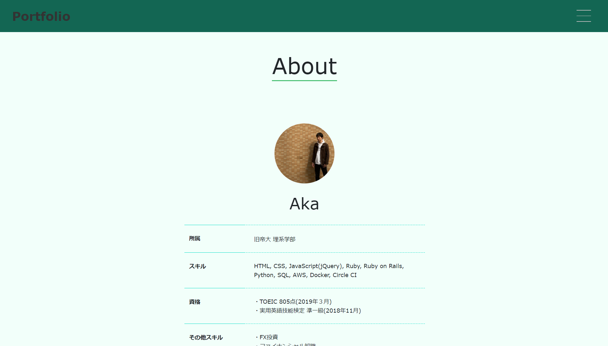
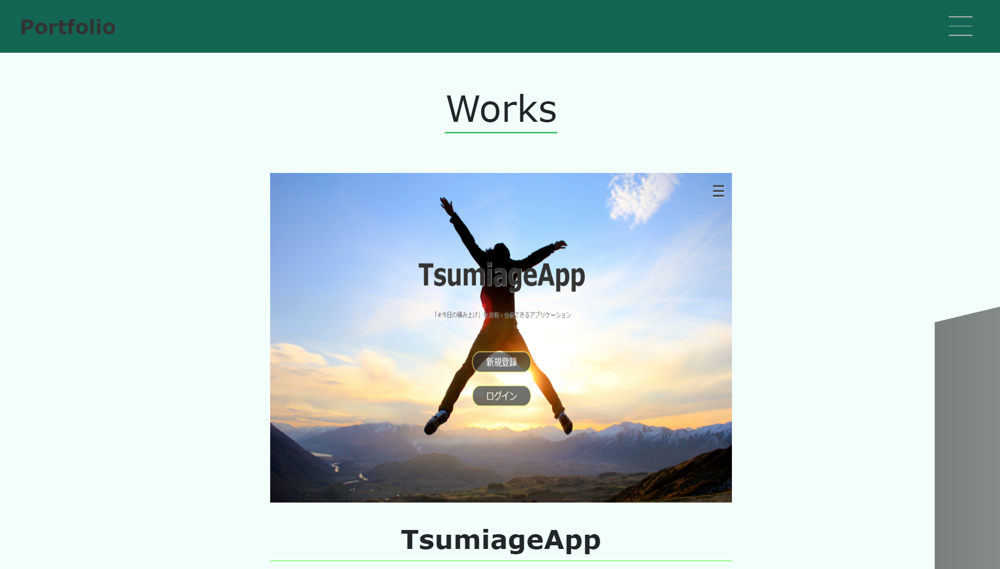
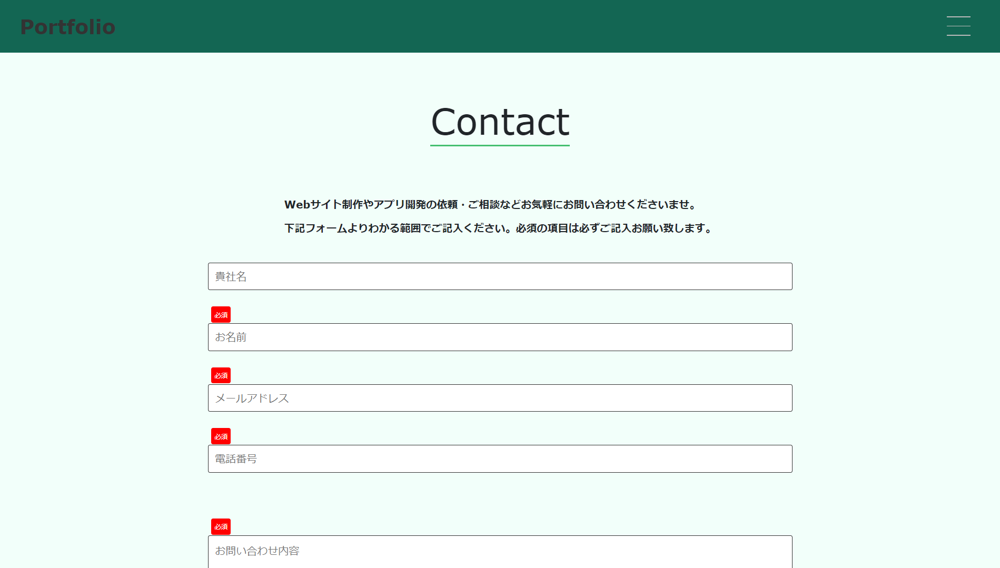
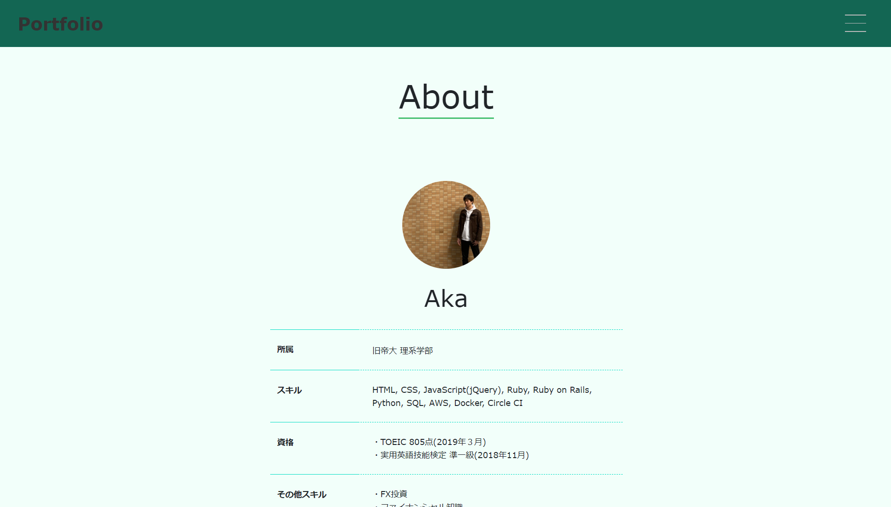
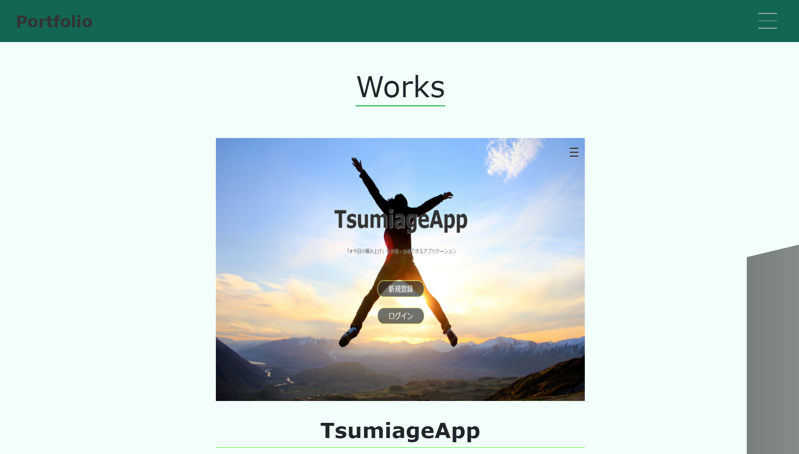
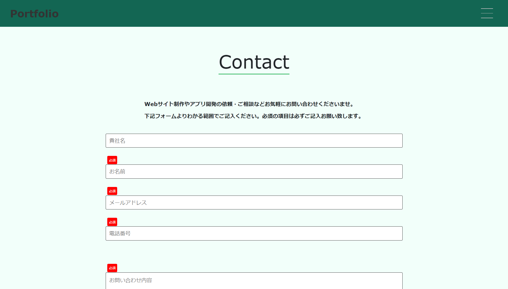

My Portfolio
- 使用言語・技術
- HTML, CSS, JavaScript(jQuery), AWS(S3, Route53, ACM, CloudFront)
- 機能詳細
- ・HTML, CSS, JavaScript(jQuery)を用いたコーディング（レスポンシブ対応）
・jQuery(slick, swiper)を用いたスライド機能 - 内容
- ポートフォリオサイト
- 制作時間
- 20時間